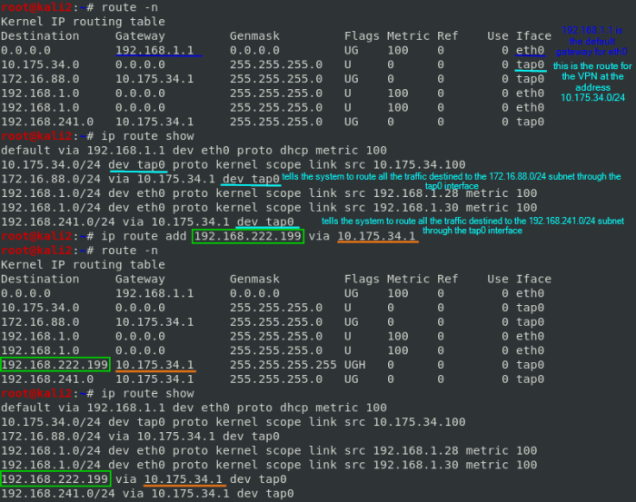

configuring static route
ip route command
ip route command is used to configure a static route
in Linux:
ip route add <destination-network/destination-subnet-mask> via <next-hop-ip> dev <exit-interface>
or in alternative with
Cisco routers we can use the follofing command on Cisco IOS(Internetwork Operating System) cli(command line interface):
ip route <destination-network> <destination-subnet-mask> (<next-hop-ip> or <exit-interface>)
There are two ways to to reach the destination network when configuring a static route:
• using
neighbour ip address • using
exit interface •
Using neighbour ip address(next gateway)
command to configure a static route if we know which is the
next-hop-ip(gateway):in Linux with iproute2 collection utilities
ip route add <destination-network/destination-subnet-mask> via <next-hop-ip>
example on
kali linux:
In this example we are adding to the operating system a route for the 192.168.222.0/24 network and that the connections have to go through 10.175.34.1 gateway
Cisco routers
or in alternative with
Cisco routers we can use the follofing command on Cisco IOS(Internetwork Operating System) cli(command line interface)
ip route <destination-network> <destination-subnet-mask> <next-hop-ip> {AD}
• In this way we configure a static route to send all the packets with destination network
<destination-network> to neighbour with ip address
<next-hop-ip> The
“default gateway” is the router on your LAN which has the responsibility of being the first point of contact for traffic to computers outside the LAN.
• Administrative Distance(
AD) is set for
default for
neighbour ip address static route at
1 for cisco routers there are different default
administrative distances(ADs) for various
routing protocol, Route with the lowest
AD value will be chosen while forwarding a packet.
If you have used next hop neighbor IP address, then the default AD value will be
1. If you have used
exit interface, then the default AD value will be
0.
This parameter(
AD) allows us to create multiple static routes for the same destination. For example we can create primary and backup path for the destination network. To create backup path, we need to set
AD value to higher than default, such as 2 or 3. With this configuration router will use primary path. Due to some reason if primary route fails, the router will start using backup route automatically.
| Routing protocol | Administrative distance(AD) |
|---|
| Directly connected interface | 0 |
| Static route out an interface | 1 |
| Enhanced Interior Gateway Routing Protocol (EIGRP) summary route | 5 |
| External Border Gateway Protocol (BGP) | 20 |
•
Using exit interface
An
exit interface can be a:
• ethernet link
• serial link
Interfaces are named by slot/type:
• ethernet0 can be abbreviated eth0 or e0
• Serial0/0 can be abbreviated ser0/0 or s0/0
we can configure the static route to use our router
exit interface(output device), It tells router that if it receives a packet for the destination specified by previous parameter then exits that packet from this interface. Device attached on other end of this interface will take care of the packet.
in
Linux:
ip route add <destination-network/destination-subnet-mask> dev <exit-interface>
or in
Cisco routers with Cisco IOS command line:
ip route <destination-network> <destination-subnet-mask> <exit-interface> {AD}
• In this way we configure a static route to send all the packets with destination network
<destination-network> out of the interface
<exit-interface> on the router
• Administrative Distance(
AD) is set for
default for
exit interface static route at
0Setting a default static route
ip route add default via <next-hop-ip> dev <exit-interface>
Adds a default route (for all destination addresses) via the
next-hop-ip that can be reached on device
exit-interface.
informations from youtube channel: "External Services"